| Symbol |
Description |
7400 | Description: quad 2-input NAND gate
Keys: TTL nand 2-input
Datasheet: http://www.ti.com/lit/gpn/sn7400 |
7402 | Description: quad 2-input NOR gate
Keys: TTL Nor2
Datasheet: http://www.ti.com/lit/gpn/sn7402 |
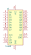
74469 | Description: 8-bit synchronous up/down counter, parallel load and hold capability (obsolete)
Keys: counter
Datasheet: http://www.ti.com/lit/gpn/sn74469 |
74AHC04 | Description: Hex Inverter
Keys: AHCMOS not inv
Datasheet: https://assets.nexperia.com/documents/data-sheet/74AHC_AHCT04.pdf |
74AHC240 | Description: 8-bit Buffer/Line Driver 3-state Inverting
Keys: AHCMOS BUFFER 3State inv
Datasheet: https://www.ti.com/lit/ds/symlink/sn54ahc240.pdf |
74AHC244 | Description: 8-bit Buffer/Line Driver 3-state
Keys: AHCMOS BUFFER 3State
Datasheet: https://assets.nexperia.com/documents/data-sheet/74AHC_AHCT244.pdf |
74AHC273 | Description: 8-bit D Flip-Flop, reset
Keys: AHCMOS DFF DFF8
Datasheet: https://assets.nexperia.com/documents/data-sheet/74AHC_AHCT273.pdf |
74AHC373 | Description: 8-bit Latch, 3-state outputs
Keys: AHCMOS REG DFF DFF8 LATCH
Datasheet: https://assets.nexperia.com/documents/data-sheet/74AHC373.pdf |
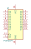
74AHC374 | Description: 8-bit Register, 3-state outputs
Keys: AHCMOS DFF DFF8 REG 3State
Datasheet: https://assets.nexperia.com/documents/data-sheet/74AHC_AHCT374.pdf |
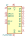
74AHC595 | Description: 8-bit serial in/out Shift Register 3-State Outputs
Keys: AHCMOS SR 3State
Datasheet: https://assets.nexperia.com/documents/data-sheet/74AHC_AHCT595.pdf |
74AHCT04 | Description: Hex Inverter
Keys: AHCTMOS not inv
Datasheet: https://assets.nexperia.com/documents/data-sheet/74AHC_AHCT04.pdf |
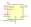
74AHCT123 | Description: Dual retriggerable monostable multivibrator
Keys: TTL monostable, multivibrator
Datasheet: http://www.ti.com/lit/gpn/sn74ahct123a |
74AHCT240 | Description: 8-bit Buffer/Line Driver 3-state Inverting
Keys: AHCTMOS BUFFER 3State inv
Datasheet: https://assets.nexperia.com/documents/data-sheet/74AHCT240.pdf |
74AHCT244 | Description: 8-bit Buffer/Line Driver 3-state
Keys: AHCTMOS BUFFER 3State
Datasheet: https://assets.nexperia.com/documents/data-sheet/74AHC_AHCT244.pdf |
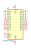
74AHCT273 | Description: 8-bit D Flip-Flop, reset
Keys: AHCTMOS DFF DFF8
Datasheet: https://assets.nexperia.com/documents/data-sheet/74AHC_AHCT273.pdf |
74AHCT373 | Description: 8-bit Latch, 3-state outputs
Keys: AHCTMOS REG DFF DFF8 LATCH
Datasheet: https://www.ti.com/lit/ds/symlink/sn74ahct373.pdf |
74AHCT374 | Description: 8-bit Register, 3-state outputs
Keys: AHCTMOS DFF DFF8 REG 3State
Datasheet: https://assets.nexperia.com/documents/data-sheet/74AHC_AHCT374.pdf |
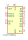
74AHCT595 | Description: 8-bit serial in/out Shift Register 3-State Outputs
Keys: AHCTMOS SR 3State
Datasheet: https://assets.nexperia.com/documents/data-sheet/74AHC_AHCT595.pdf |
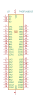
74CBTLV16212 | Description: Low-voltage 24-bit FET Bus-exchange switch
Keys: bus
Datasheet: https://www.ti.com/lit/ds/symlink/sn74cbtlv16212.pdf |
74CBTLV3257 | Description: Quad 1:2 FET Multiplexer/Demultiplexer, Low-Voltage
Keys: mux demux low-voltage
Datasheet: http://www.ti.com/lit/ds/symlink/sn74cbtlv3257.pdf |
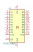
74CBTLV3861 | Description: Low-voltage 10-bit FET Bus switch
Keys: bus
Datasheet: http://www.ti.com/lit/gpn/sn74cbtlv3861 |
74HC00 | Description: quad 2-input NAND gate
Keys: HCMOS nand 2-input
Datasheet: http://www.ti.com/lit/gpn/sn74hc00 |
74HC02 | Description: quad 2-input NOR gate
Keys: HCMOS Nor2
Datasheet: http://www.ti.com/lit/gpn/sn74hc02 |
74HC04 | Description: Hex Inverter
Keys: HCMOS not inv
Datasheet: https://assets.nexperia.com/documents/data-sheet/74HC_HCT04.pdf |
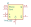
74HC123 | Description: Dual retriggerable monostable multivibrator
Keys: TTL monostable, multivibrator
Datasheet: https://assets.nexperia.com/documents/data-sheet/74HC_HCT123.pdf |
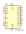
74HC137 | Description: 3-to-8 line decoder/multiplexer with address latches, DIP-16/SOIC-16/SSOP-16
Keys: demux
Datasheet: http://www.ti.com/lit/ds/symlink/cd74hc237.pdf |
74HC14 | Description: Hex inverter schmitt trigger
Keys: HCMOS not inverter
Datasheet: http://www.ti.com/lit/gpn/sn74HC14 |
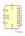
74HC164 | Description: 8-bit serial-in parallel-out shift register
Keys: 8-bit shift register
Datasheet: https://assets.nexperia.com/documents/data-sheet/74HC_HCT164.pdf |
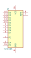
74HC165 | Description: Shift Register, 8-bit, Parallel Load
Keys: 8 bit shift register parallel load cmos
Datasheet: https://assets.nexperia.com/documents/data-sheet/74HC_HCT165.pdf |
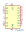
74HC237 | Description: 3-to-8 line decoder/multiplexer with address latches, DIP-16/SOIC-16/SSOP-16
Keys: demux
Datasheet: http://www.ti.com/lit/ds/symlink/cd74hc237.pdf |
74HC240 | Description: 8-bit Buffer/Line Driver 3-state Inverting
Keys: HCMOS BUFFER 3State inv
Datasheet: https://assets.nexperia.com/documents/data-sheet/74HC_HCT240.pdf |
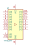
74HC244 | Description: 8-bit Buffer/Line Driver 3-state
Keys: HCMOS BUFFER 3State
Datasheet: https://assets.nexperia.com/documents/data-sheet/74HC_HCT244.pdf |
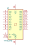
74HC245 | Description: Octal BUS Transceivers, 3-State outputs
Keys: HCMOS BUS 3State
Datasheet: http://www.ti.com/lit/gpn/sn74HC245 |
74HC273 | Description: 8-bit D Flip-Flop, reset
Keys: HCMOS DFF DFF8
Datasheet: https://assets.nexperia.com/documents/data-sheet/74HC_HCT273.pdf |
74HC373 | Description: 8-bit Latch, 3-state outputs
Keys: HCMOS REG DFF DFF8 LATCH
Datasheet: https://www.ti.com/lit/ds/symlink/cd54hc373.pdf |
74HC374 | Description: 8-bit Register, 3-state outputs
Keys: HCMOS DFF DFF8 REG 3State
Datasheet: https://www.ti.com/lit/ds/symlink/cd74hct374.pdf |
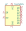
74HC4024 | Description: 7-stage binary ripple counter, SOIC-14
Keys: binary counter
Datasheet: https://assets.nexperia.com/documents/data-sheet/74HC4024.pdf |
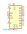
74HC4051 | Description: 8-channel analog multiplexer/demultiplexer, DIP-16/SOIC-16/TSSOP-16
Keys: HCMOS Multiplexer Demultiplexer Analog
Datasheet: http://www.ti.com/lit/ds/symlink/cd74hc4051.pdf |
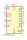
74HC590 | Description: 8-bit Binary Counter with Output Register 3-State Outputs, SOIC-16/TSSOP-16
Keys: HCMOS Counter 3State
Datasheet: https://assets.nexperia.com/documents/data-sheet/74HC590.pdf |
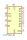
74HC590A | Description: 8-bit Binary Counter with Output Register 3-State Outputs, DIP-16/SOIC-16/SOIC-16W
Keys: HCMOS Counter 3State
Datasheet: http://www.ti.com/lit/ds/symlink/sn74hc590a.pdf |
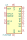
74HC595 | Description: 8-bit serial in/out Shift Register 3-State Outputs
Keys: HCMOS SR 3State
Datasheet: http://www.ti.com/lit/ds/symlink/sn74hc595.pdf |
74HC596 | Description: 8-bit serial in/out Shift Register Open Collector Outputs
Keys: HCMOS SR OpenCollector
Datasheet: https://assets.nexperia.com/documents/data-sheet/74HC_HCT595.pdf |
74HC688 | Description: 8-bit magnitude comparator
Keys: HCMOS DECOD Arith
Datasheet: https://www.ti.com/lit/ds/symlink/cd54hc688.pdf |
74HC7014 | Description: Hex non-inverting buffer with precision Schmitt Trigger inputs, SOIC-14
Keys: Hex non-inverting Schmitt buffer
Datasheet: https://assets.nexperia.com/documents/data-sheet/74HC7014.pdf |
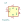
74HC74 | Description: Dual D Flip-flop, Set & Reset
Keys: TTL DFF
Datasheet: 74xx/74hc_hct74.pdf |
74HC86 | Description: Quad 2-input XOR
Keys: TTL XOR2
Datasheet: http://www.ti.com/lit/gpn/sn74HC86 |
74HCT00 | Description: quad 2-input NAND gate
Keys: HCTMOS nand 2-input
Datasheet: http://www.ti.com/lit/gpn/sn74hct00 |
74HCT02 | Description: quad 2-input NOR gate
Keys: HCTMOS Nor2
Datasheet: http://www.ti.com/lit/gpn/sn74hct02 |
74HCT04 | Description: Hex Inverter
Keys: HCTMOS not inv
Datasheet: https://assets.nexperia.com/documents/data-sheet/74HC_HCT04.pdf |
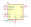
74HCT123 | Description: Dual retriggerable monostable multivibrator
Keys: TTL monostable, multivibrator
Datasheet: https://assets.nexperia.com/documents/data-sheet/74HC_HCT123.pdf |
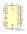
74HCT137 | Description: 3-to-8 line decoder/multiplexer with address latches, DIP-16/SOIC-16/SSOP-16
Keys: demux
Datasheet: http://www.ti.com/lit/ds/symlink/cd74hc237.pdf |
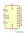
74HCT164 | Description: 8-bit serial-in parallel-out shift register
Keys: 8-bit shift register
Datasheet: https://assets.nexperia.com/documents/data-sheet/74HC_HCT164.pdf |
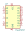
74HCT237 | Description: 3-to-8 line decoder/multiplexer with address latches, DIP-16/SOIC-16/SSOP-16
Keys: demux
Datasheet: http://www.ti.com/lit/ds/symlink/cd74hc237.pdf |
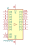
74HCT240 | Description: 8-bit buffer; 3-state; inverting
Keys: HCTMOS BUFFER 3State inv
Datasheet: https://assets.nexperia.com/documents/data-sheet/74HC_HCT240.pdf |
74HCT244 | Description: 8-bit Buffer/Line Driver 3-state
Keys: HCTMOS BUFFER 3State
Datasheet: https://assets.nexperia.com/documents/data-sheet/74HC_HCT244.pdf |
74HCT273 | Description: 8-bit D Flip-Flop, reset
Keys: HCTMOS DFF DFF8
Datasheet: https://assets.nexperia.com/documents/data-sheet/74HC_HCT273.pdf |
74HCT373 | Description: 8-bit Latch, 3-state outputs
Keys: HCTMOS REG DFF DFF8 LATCH
Datasheet: https://www.ti.com/lit/ds/symlink/sn74hct373.pdf |
74HCT374 | Description: 8-bit Register, 3-state outputs
Keys: HCTMOS DFF DFF8 REG 3State
Datasheet: https://www.ti.com/lit/ds/symlink/cd74hct374.pdf |
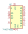
74HCT4051 | Description: 8-channel analog multiplexer/demultiplexer, DIP-16/SOIC-16/TSSOP-16
Keys: TTL Multiplexer Demultiplexer Analog
Datasheet: http://www.ti.com/lit/ds/symlink/cd74hct4051.pdf |
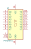
74HCT541 | Description: 8-bit Buffer/Line Driver 3-state outputs
Keys: TTL BUFFER 3State BUS
Datasheet: http://www.ti.com/lit/gpn/sn74HCT541 |
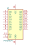
74HCT574 | Description: 8-bit Register, 3-state outputs
Keys: TTL REG DFF DFF8 3State
Datasheet: http://www.ti.com/lit/gpn/sn74HCT574 |
74HCT595 | Description: 8-bit serial in/out Shift Register 3-State Outputs
Keys: HCTMOS SR 3State
Datasheet: https://assets.nexperia.com/documents/data-sheet/74HC_HCT595.pdf |
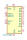
74HCT596 | Description: 8-bit serial in/out Shift Register Open Collector Outputs
Keys: HCTMOS SR OpenCollector
Datasheet: https://assets.nexperia.com/documents/data-sheet/74HC_HCT595.pdf |
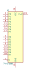
74HCT688 | Description: 8-bit magnitude comparator
Keys: HCTMOS DECOD Arith
Datasheet: https://www.ti.com/lit/ds/symlink/cd54hc688.pdf |
74LCX07 | Description: CMOS hex buffer (open drain) with 5V tolerant inputs
Keys: CMOS hex buffer
Datasheet: www.st.com/resource/en/datasheet/74lcx07.pdf |
74LS00 | Description: quad 2-input NAND gate
Keys: TTL nand 2-input
Datasheet: http://www.ti.com/lit/gpn/sn74ls00 |
74LS01 | Description: quad 2-input NAND gate, open collector outputs NRND
Keys: TTL nand 2-input open collector
Datasheet: http://www.nteinc.com/specs/7400to7499/pdf/nte74LS01.pdf |
74LS02 | Description: quad 2-input NOR gate
Keys: TTL Nor2
Datasheet: http://www.ti.com/lit/gpn/sn74ls02 |
74LS03 | Description: Quad 2-input NAND open collector
Keys: TTL Nand2 OpenColl
Datasheet: http://www.ti.com/lit/gpn/sn74LS03 |
74LS04 | Description: Hex Inverter
Keys: TTL not inv
Datasheet: http://www.ti.com/lit/gpn/sn74LS04 |
74LS05 | Description: Inverter Open Collect
Keys: TTL not inv OpenCol
Datasheet: http://www.ti.com/lit/gpn/sn74LS05 |
74LS06 | Description: Inverter Open Collect
Keys: TTL not inv OpenCol
Datasheet: http://www.ti.com/lit/gpn/sn74LS06 |
74LS06N | Description: Inverter Open Collect
Keys: TTL not inv OpenCol
Datasheet: http://www.ti.com/lit/gpn/sn74LS06N |
74LS07 | Description: Hex Buffers and Drivers With Open Collector High Voltage Outputs
Keys: TTL hex buffer OpenCol
Datasheet: www.ti.com/lit/ds/symlink/sn74ls07.pdf |
74LS08 | Description: Quad And2
Keys: TTL and2
Datasheet: http://www.ti.com/lit/gpn/sn74LS08 |
74LS09 | Description: Quad 2-input AND Open Collect
Keys: TTL and2 OpenCol
Datasheet: http://www.ti.com/lit/gpn/sn74LS09 |
74LS10 | Description: Triple 3-input NAND
Keys: TTL Nand3
Datasheet: http://www.ti.com/lit/gpn/sn74LS10 |
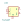
74LS107 | Description: Dual JK Flip-Flop, reset
Keys: TTL JK
Datasheet: http://www.ti.com/lit/gpn/sn74LS107 |
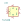
74LS109 | Description: Dual JK Flip-Flop, Set & Reset
Keys: TTL JK
Datasheet: http://www.ti.com/lit/gpn/sn74LS109 |
74LS11 | Description: Triple 3-input AND
Keys: TTL And3
Datasheet: http://www.ti.com/lit/gpn/sn74LS11 |
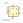
74LS112 | Description: dual JK Flip-Flop, Set & Reset
Keys: TTL JK
Datasheet: http://www.ti.com/lit/gpn/sn74LS112 |
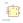
74LS113 | Description: dual JK flip-flop, Set
Keys: TTL JK
Datasheet: http://www.ti.com/lit/gpn/sn74LS113 |
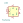
74LS114 | Description: Dual JK flip-flop, common Clock & Reset, Set
Keys: TTL JK
Datasheet: http://www.ti.com/lit/gpn/sn74LS114 |
74LS12 | Description: Triple 3-input NAND Open Collector
Keys: TTL Nand3 OpenCol
Datasheet: http://www.ti.com/lit/gpn/sn74LS12 |
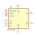
74LS121 | Description: monostable multivibrator with Schmitt-trigger inputs
Keys: monostable
Datasheet: http://www.ti.com/lit/gpn/sn74121 |
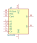
74LS122 | Description: Retriggerable Monostable
Keys: TTL monostable
Datasheet: http://www.ti.com/lit/gpn/sn74LS122 |
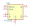
74LS123 | Description: Dual retriggerable Monostable
Keys: TTL monostable
Datasheet: http://www.ti.com/lit/gpn/sn74LS123 |
74LS125 | Description: Quad buffer 3-State outputs
Keys: TTL buffer 3State
Datasheet: http://www.ti.com/lit/gpn/sn74LS125 |
74LS126 | Description: Quad buffer 3-State outputs
Keys: TTL Buffer 3State
Datasheet: http://www.ti.com/lit/gpn/sn74LS126 |
74LS13 | Description: Dual 4-input NAND Schmitt trigger
Keys: TTL Nand4
Datasheet: http://www.ti.com/lit/gpn/sn74LS13 |
74LS132 | Description: Quad 2-input NAND Schmitt trigger
Keys: TTL Nand2
Datasheet: http://www.ti.com/lit/gpn/sn74LS132 |
74LS133 | Description: NAND 13-input
Keys: TTL Nand13
Datasheet: http://www.ti.com/lit/gpn/sn74LS133 |
74LS136 | Description: Quad 2-input XOR Open Collector
Keys: TTL XOR2 OpenCol
Datasheet: http://www.ti.com/lit/ds/symlink/sn54ls136.pdf |
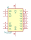
74LS137 | Description: Decoder 3 to 8, address latches
Keys: TTL DECOD8 DECOD
Datasheet: http://www.ti.com/lit/gpn/sn74LS137 |
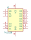
74LS138 | Description: Decoder 3 to 8 active low outputs
Keys: TTL DECOD DECOD8
Datasheet: http://www.ti.com/lit/gpn/sn74LS138 |
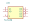
74LS139 | Description: Dual Decoder 1 of 4, Active low outputs
Keys: TTL DECOD4
Datasheet: http://www.ti.com/lit/ds/symlink/sn74ls139a.pdf |
74LS14 | Description: Hex inverter schmitt trigger
Keys: TTL not inverter
Datasheet: http://www.ti.com/lit/gpn/sn74LS14 |
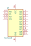
74LS145 | Description: Decoder 1 to 10, Open Collector
Keys: TTL DECOD10 OpenColl
Datasheet: http://www.ti.com/lit/gpn/sn74LS145 |
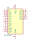
74LS147 | Description: Priority Encoder, 10 to 4
Keys: TTL ENCOD
Datasheet: http://www.ti.com/lit/gpn/sn74LS147 |
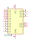
74LS148 | Description: Priority Encoder 3 to 8 cascadable
Keys: TTL ENCOD
Datasheet: http://www.ti.com/lit/gpn/sn74LS148 |
74LS15 | Description: Triple 3-input AND
Keys: TTL And3
Datasheet: http://www.ti.com/lit/gpn/sn74LS15 |
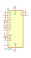
74LS151 | Description: Multiplexer 8 to 1
Keys: TTL MUX8
Datasheet: http://www.ti.com/lit/gpn/sn74LS151 |
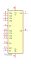
74LS153 | Description: Dual Multiplexer 4 to 1
Keys: TTL Mux4
Datasheet: http://www.ti.com/lit/gpn/sn74LS153 |
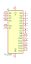
74LS154 | Description: Decoder 4 to 16
Keys: TTL DECOD16 DECOD
Datasheet: http://www.ti.com/lit/gpn/sn74LS154 |
74LS155 | Description: Dual 2 to 4 lines Decoder/Demultiplexer
Keys: TTL DECOD8 DECOD4 DEMUX4 DEMUX8 DEMUX DECOD
Datasheet: http://www.ti.com/lit/gpn/sn74LS155 |
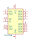
74LS156 | Description: Dual 2 to 4 lines Decoder/Demultiplexer, Open Collector
Keys: TTL DECOD8 DECOD4 DEMUX4 DEMUX8 OpenCol
Datasheet: http://www.ti.com/lit/gpn/sn74LS156 |
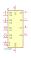
74LS157 | Description: Quad 2 to 1 line Multiplexer
Keys: TTL MUX MUX2
Datasheet: http://www.ti.com/lit/gpn/sn74LS157 |
74LS158 | Description: Quad 2 to 1 multiplexer
Keys: TTL Mux MUX2
Datasheet: http://www.ti.com/lit/gpn/sn74LS158 |
74LS160 | Description: Synchronous 4-bit programmable decimal Counter
Keys: TTL CNT CNT4
Datasheet: http://www.ti.com/lit/gpn/sn74LS160 |
74LS161 | Description: Synchronous 4-bit programmable binary Counter
Keys: TTL CNT CNT4
Datasheet: http://www.ti.com/lit/gpn/sn74LS161 |
74LS162 | Description: Synchronous 4-bit programmable decimal Counter
Keys: TTL CNT CNT4
Datasheet: http://www.ti.com/lit/gpn/sn74LS162 |
74LS163 | Description: Synchronous 4-bit programmable binary Counter
Keys: TTL CNT CNT4
Datasheet: http://www.ti.com/lit/gpn/sn74LS163 |
74LS165 | Description: Shift Register 8-bit, parallel load
Keys: TTL SR SR8
Datasheet: https://www.ti.com/lit/ds/symlink/sn74ls165a.pdf |
74LS166 | Description: Shift Register 8-bit, parallel load
Keys: TTL SR SR8
Datasheet: http://www.ti.com/lit/gpn/sn74LS166 |
74LS168 | Description: Synchronous 4-bit Up/Down Decimal counter
Keys: TTL CNT CNT4
Datasheet: http://www.ti.com/lit/gpn/sn74LS168 |
74LS169 | Description: Synchronous 4-bit Up/Down binary counter
Keys: TTL CNT CNT4
Datasheet: http://www.ti.com/lit/gpn/sn74LS169 |
74LS170 | Description: 4 x 4 Register Files Open Collector
Keys: TTL Register OpenCol
Datasheet: http://www.ti.com/lit/gpn/sn74LS170 |
74LS173 | Description: 4-bit D-type Register, 3 state out
Keys: TTL REG REG4 3State DFF
Datasheet: http://www.ti.com/lit/gpn/sn74LS173 |
74LS174 | Description: Hex D-type Flip-Flop, reset
Keys: TTL REG REG6 DFF
Datasheet: http://www.ti.com/lit/gpn/sn74LS174 |
74LS175 | Description: 4-bit D Flip-Flop, reset
Keys: TTL REG REG4 DFF
Datasheet: http://www.ti.com/lit/gpn/sn74LS175 |
74LS181 | Description: Arithmetic logic unit
Keys: TTL ALU ARITH
Datasheet: 74xx/74F181.pdf |
74LS182 | Description: Carry generator
Keys: TTL ALU ARITH
Datasheet: http://www.ti.com/lit/gpn/sn74LS182 |
74LS190 | Description: 4-bit Synchronous Up/Down BCD Counter
Keys: TTL CNT CNT4
Datasheet: http://www.ti.com/lit/gpn/sn74LS190 |
74LS191 | Description: 4-bit Synchronous Up/Down binary Counter
Keys: TTL CNT CNT4
Datasheet: http://www.ti.com/lit/gpn/sn74LS191 |
74LS192 | Description: Synchronous 4-bit Up/Down (2 clk) counter
Keys: TTL CNT CNT4
Datasheet: http://www.ti.com/lit/ds/symlink/sn74ls193.pdf |
74LS193 | Description: Synchronous 4-bit Up/Down (2 clk) counter
Keys: TTL CNT CNT4
Datasheet: http://www.ti.com/lit/ds/symlink/sn74ls193.pdf |
74LS194 | Description: Shift Register 4-bit Bidirectional
Keys: TTL RS SR4
Datasheet: http://www.ti.com/lit/gpn/sn74LS194 |
74LS195 | Description: Shift Register 4-bit, parallel
Keys: TTL SR SR4
Datasheet: http://www.ti.com/lit/gpn/sn74LS195 |
74LS196 | Description: 4 (3+1)-bit presettable BCD counter
Keys: TTL CNT CNT4
Datasheet: http://www.ti.com/lit/gpn/sn74LS196 |
74LS197 | Description: 4 (3+1)-bit presettable binary counter
Keys: TTL CNT CNT4
Datasheet: http://www.ti.com/lit/gpn/sn74LS197 |
74LS20 | Description: Dual 4-input NAND
Keys: TTL Nand4
Datasheet: http://www.ti.com/lit/gpn/sn74LS20 |
74LS21 | Description: Dual 4-input AND
Keys: TTL And4
Datasheet: http://www.ti.com/lit/gpn/sn74LS21 |
74LS22 | Description: Dual 4-input NAND Open Collector
Keys: TTL Nand4 OpenColl
Datasheet: http://www.ti.com/lit/gpn/sn74LS22 |
74LS221 | Description: Dual Monostable
Keys: TTL Monostable
Datasheet: http://www.ti.com/lit/gpn/sn74LS221 |
74LS240 | Description: Octal Buffer and Line Driver With 3-State Output, active-low enables, inverting outputs
Keys: 7400 logic ttl low power schottky
Datasheet: http://www.ti.com/lit/ds/symlink/sn74ls240.pdf |
74LS240_Split | Description: Octal Buffer and Line Driver With 3-State Output, active-low enables, inverting outputs, split symbol
Keys: 7400 logic ttl low power schottky
Datasheet: http://www.ti.com/lit/ds/symlink/sn74ls240.pdf |
74LS241 | Description: Octal Buffer and Line Driver With 3-State Output, complementary enables, non-inverting outputs
Keys: 7400 logic ttl low power schottky
Datasheet: http://www.ti.com/lit/ds/symlink/sn74ls241.pdf |
74LS241_Split | Description: Octal Buffer and Line Driver With 3-State Output, complementary enables, non-inverting outputs, split symbol
Keys: 7400 logic ttl low power schottky
Datasheet: http://www.ti.com/lit/ds/symlink/sn74ls241.pdf |
74LS242 | Description: quad bus transceiver, inverting 3-state outputs
Keys: bus 3state
Datasheet: http://www.ti.com/lit/gpn/sn74LS242 |
74LS243 | Description: 4-bit Bus Tranceiver
Keys: TTL Buffer 3State BUS BIDI
Datasheet: http://www.ti.com/lit/gpn/sn74LS243 |
74LS244 | Description: Octal Buffer and Line Driver With 3-State Output, active-low enables, non-inverting outputs
Keys: 7400 logic ttl low power schottky
Datasheet: http://www.ti.com/lit/ds/symlink/sn74ls244.pdf |
74LS244_Split | Description: Octal Buffer and Line Driver With 3-State Output, active-low enables, non-inverting outputs, split symbol
Keys: 7400 logic ttl low power schottky
Datasheet: http://www.ti.com/lit/ds/symlink/sn74ls241.pdf |
74LS245 | Description: Octal BUS Transceivers, 3-State outputs
Keys: TTL BUS 3State
Datasheet: http://www.ti.com/lit/gpn/sn74LS245 |
74LS246 | Description: BCD to 7-segment Decoder Open Collector active Low
Keys: TTL DECOD
Datasheet: http://www.ti.com/lit/gpn/sn74LS246 |
74LS247 | Description: BCD to 7 segments Decoder Open Collector active Low
Keys: TTL DECOD
Datasheet: http://www.ti.com/lit/gpn/sn74LS247 |
74LS248 | Description: BCD to 7-segment Decoder, Active High
Keys: TTL DECOD
Datasheet: http://www.ti.com/lit/gpn/sn74LS248 |
74LS249 | Description: BCD to 7-segment Decoder, Open collector, Active High
Keys: TTL DECOD OpenCol
Datasheet: http://www.ti.com/lit/gpn/sn74LS249 |
74LS251 | Description: Multiplexer 8 to 1, 3-state Outputs
Keys: TTL MUX MUX8 3State
Datasheet: http://www.ti.com/lit/gpn/sn74LS251 |
74LS253 | Description: Dual Multiplexer 4 to 1, 3-State Outputs
Keys: TTL MUX MUX4 3State
Datasheet: http://www.ti.com/lit/gpn/sn74LS253 |
74LS256 | Description: dual 4-bit addressable latch
Keys: latch
Datasheet: http://www.ti.com/lit/gpn/sn74LS256 |
74LS257 | Description: Quad 2 to 1 Multiplexer
Keys: TTL MUX MUX2
Datasheet: http://www.ti.com/lit/gpn/sn74LS257 |
74LS258 | Description: Quad 2 to 1 Multiplexer, inverting
Keys: TTL MUX MUX2
Datasheet: http://www.ti.com/lit/gpn/sn74LS258 |
74LS259 | Description: 8-bit addressable latch
Keys: TTL REG DFF
Datasheet: http://www.ti.com/lit/gpn/sn74LS259 |
74LS26 | Description: Quad 2-input NAND Open collector
Keys: TTL Nand2 OpenCol
Datasheet: http://www.ti.com/lit/gpn/sn74LS26 |
74LS27 | Description: Triple 3-input NOR
Keys: TTL Nor3
Datasheet: http://www.ti.com/lit/gpn/sn74LS27 |
74LS273 | Description: 8-bit D Flip-Flop, reset
Keys: TTL DFF DFF8
Datasheet: http://www.ti.com/lit/gpn/sn74LS273 |
74LS28 | Description: quad 2-input NOR buffer NRND
Keys: TTL Nor2 Buffer
Datasheet: http://eeshop.unl.edu/pdf/74ls28.pdf |
74LS280 | Description: Parity Generator/Checker
Keys: TTL ALU Arith
Datasheet: http://www.ti.com/lit/gpn/sn74LS280 |
74LS283 | Description: 4-bit full Adder
Keys: TTL ADD Arith ALU
Datasheet: http://www.ti.com/lit/gpn/sn74LS283 |
74LS290 | Description: 4-bit BCD counter
Keys: TTL CNT CNT4
Datasheet: http://www.ti.com/lit/gpn/sn74LS290 |
74LS293 | Description: 4-bit binary counter
Keys: TTL CNT CNT4
Datasheet: http://www.ti.com/lit/gpn/sn74LS293 |
74LS295 | Description: 4-bit bidirectional register, 3-state outputs
Keys: register
Datasheet: http://www.ti.com/lit/gpn/sn74LS295 |
74LS298 | Description: Quad 2 to 1 multiplexer with storage
Keys: TTL MUX MUX2
Datasheet: http://www.ti.com/lit/gpn/sn74LS298 |
74LS299 | Description: 8-bit Universal shift/storage Register
Keys: TTL REG SR SR8
Datasheet: http://www.ti.com/lit/gpn/sn74LS299 |
74LS30 | Description: 8-input NAND
Keys: TTL Nand8
Datasheet: http://www.ti.com/lit/gpn/sn74LS30 |
74LS32 | Description: Quad 2-input OR
Keys: TTL Or2
Datasheet: http://www.ti.com/lit/gpn/sn74LS32 |
74LS322 | Description: 8-bit shift register, sign extend, 3-state outputs
Keys: register
Datasheet: http://www.ti.com/lit/gpn/sn74LS322 |
74LS323 | Description: 8-bit Universal Shift/Storage Register
Keys: TTL REG SR SR8
Datasheet: http://www.ti.com/lit/gpn/sn74LS323 |
74LS33 | Description: Quad 2-input NOR, Open collector
Keys: TTL Nor2 OpenColl
Datasheet: http://www.ti.com/lit/gpn/sn74LS33 |
74LS348 | Description: 8 to 3 lines Priority Encoder
Keys: TTL ENCOD Arith
Datasheet: http://www.ti.com/lit/gpn/sn74LS348 |
74LS352 | Description: Dual 4 to 1 line Multiplexer
Keys: TTL Mux MUX4
Datasheet: http://www.ti.com/lit/gpn/sn74LS352 |
74LS353 | Description: Dual 4 to 1 line Multiplexer, inverter
Keys: TTL MUX MUX2
Datasheet: http://www.ti.com/lit/gpn/sn74LS353 |
74LS365 | Description: Hex Bus Driver, 3-State Outputs
Keys: TTL Buffer BUS 3State
Datasheet: http://www.ti.com/lit/gpn/sn74LS365 |
74LS366 | Description: Hex Bus Driver inverter, 3-state outputs
Keys: TTL Buffer BUS 3State
Datasheet: http://www.ti.com/lit/gpn/sn74LS366 |
74LS367 | Description: Hex Bus Driver 3-state outputs
Keys: TTL Buffer BUS 3State
Datasheet: http://www.ti.com/lit/gpn/sn74LS367 |
74LS368 | Description: Hex Bus Driver inverter, 3-state outputs
Keys: TTL Buffer BUS 3State
Datasheet: http://www.ti.com/lit/gpn/sn74LS368 |
74LS37 | Description: quad 2-input NAND buffer
Keys: TTL nand 2-input buffer
Datasheet: http://www.ti.com/lit/gpn/sn74ls37 |
74LS373 | Description: 8-bit Latch, 3-state outputs
Keys: TTL REG DFF DFF8 LATCH
Datasheet: http://www.ti.com/lit/gpn/sn74LS373 |
74LS374 | Description: 8-bit Register, 3-state outputs
Keys: TTL DFF DFF8 REG 3State
Datasheet: http://www.ti.com/lit/gpn/sn74LS374 |
74LS375 | Description: 4-bit Latch
Keys: TTL DFF DFF4 Latch
Datasheet: http://www.ti.com/lit/gpn/sn74LS375 |
74LS377 | Description: 8-bit Register
Keys: TTL REG DFF DFF8
Datasheet: http://www.ti.com/lit/gpn/sn74LS377 |
74LS378 | Description: 6-bit Register
Keys: TTL REG DFF DFF6
Datasheet: http://www.ti.com/lit/gpn/sn74LS378 |
74LS379 | Description: 4-bit Register
Keys: TTL REG DFF DFF4
Datasheet: http://www.ti.com/lit/gpn/sn74LS379 |
74LS38 | Description: Quad Buffer 2-input NAND Open collector
Keys: TTL Nand2 OpenCol Buffer
Datasheet: http://www.ti.com/lit/gpn/sn74LS38 |
74LS385 | Description: Quad serial Adder
Keys: TTL ADD Arith ALU
Datasheet: http://www.ti.com/lit/gpn/sn74LS385 |
74LS386 | Description: Quad 2-input XOR
Keys: TTL XOR2
Datasheet: http://www.ti.com/lit/gpn/sn74LS386 |
74LS390 | Description: Dual BCD 4-bit counter
Keys: TTL CNT CNT4
Datasheet: http://www.ti.com/lit/gpn/sn74LS390 |
74LS393 | Description: Dual BCD 4-bit counter
Keys: TTL CNT CNT4
Datasheet: 74xx\74LS393.pdf |
74LS395 | Description: 4-bit universal shift register, 3-state outputs
Keys: TTL SR SR4 REG 3State
Datasheet: http://www.ti.com/lit/gpn/sn74LS395 |
74LS398 | Description: Quad 2 to 1 line Multiplexer, 3-state outputs
Keys: TTL MUX MUX2 3State
Datasheet: http://www.ti.com/lit/gpn/sn74LS398 |
74LS399 | Description: Quad 2 to 1 line multiplexer with storage
Keys: TTL MUX MUX2
Datasheet: http://www.ti.com/lit/gpn/sn74LS399 |
74LS40 | Description: Dual 4-input NAND
Keys: TTL Nand4
Datasheet: http://www.ti.com/lit/gpn/sn74LS40 |
74LS42 | Description: 4 to 10 line Decoder
Keys: TTL DECOD DECOD10
Datasheet: http://www.ti.com/lit/gpn/sn74LS42 |
74LS46 | Description: BCD to 7-segment Driver, Open Collector, 15V outputs
Keys: TTL DECOD DECOD7 OpenCol
Datasheet: http://www.ti.com/lit/gpn/sn74LS46 |
74LS47 | Description: BCD to 7-segment Driver, Open Collector, 30V outputs
Keys: TTL DECOD DECOD7 OpenCol
Datasheet: http://www.ti.com/lit/gpn/sn74LS47 |
74LS48 | Description: BCD to 7-segment Decoder/driver, Active High outputs
Keys: TTL DECOD DECOD7
Datasheet: http://www.ti.com/lit/gpn/sn74LS48 |
74LS49 | Description: BCD to 7-segment decoder/driver, Open collector
Keys: TTL DECOD DECOD7 OpenCol
Datasheet: http://www.ti.com/lit/gpn/sn74ls47 |
74LS51 | Description: Dual 3- and 2-input AND-NOR ( S = /(AB[C] + DE[F]) )
Keys: TTL ANDNOR
Datasheet: http://www.ti.com/lit/ds/symlink/sn74ls51.pdf |
| 74LS54 | Description: And-Nor (S = /(AB + CD + EF + GH) )
Keys: TTL ANDNOR
Datasheet: http://www.ti.com/lit/gpn/sn74LS54 |
74LS540 | Description: 8-bit Buffer/Line driver Inverter, 3-state outputs
Keys: BUFFER BUS TTL 3State
Datasheet: http://www.ti.com/lit/gpn/sn74LS540 |
74LS541 | Description: 8-bit Buffer/Line Driver 3-state outputs
Keys: TTL BUFFER 3State BUS
Datasheet: http://www.ti.com/lit/gpn/sn74LS541 |
74LS55 | Description: AND-NOR ( S = / (ABCD + EFGH) )
Keys: TTL ANDNOR
Datasheet: http://www.ti.com/lit/gpn/sn74LS55 |
74LS573 | Description: 8-bit Latch 3-state outputs
Keys: TTL DFF DFF8 LATCH 3State
Datasheet: 74xx/74hc573.pdf |
74LS574 | Description: 8-bit Register, 3-state outputs
Keys: TTL REG DFF DFF8 3State
Datasheet: http://www.ti.com/lit/gpn/sn74LS574 |
74LS590 | Description: 8-bit Binary Counter with Output Register 3-State Outputs, DIP-16/SOIC-16/SOIC-16W
Keys: TTL Counter 3State
Datasheet: http://www.ti.com/lit/gpn/sn74ls590 |
74LS595 | Description: 8-bit serial in/out Shift Register 3-State Outputs
Keys: TTL SR 3State
Datasheet: http://www.ti.com/lit/gpn/sn74ls595 |
74LS596 | Description: 8-bit serial in/out Shift Register Open Collector outputs
Keys: HCMOS SR OpenCollector
Datasheet: http://www.ti.com/lit/gpn/sn74ls596 |
74LS629 | Description: dual voltage-controlled oscillator, enable control, range control
Keys: VCO
Datasheet: http://www.ti.com/lit/gpn/sn74LS629 |
74LS670 | Description: 4 x 4 Register Files 3-State Outputs
Keys: TTL Register 3State
Datasheet: http://www.ti.com/lit/gpn/sn74LS670 |
74LS688 | Description: 8-bit magnitude comparator
Keys: TTL DECOD Arith
Datasheet: http://www.ti.com/lit/gpn/sn74LS688 |
74LS73 | Description: Dual JK Flip-Flop, reset
Keys: TTL JK JKFF
Datasheet: http://www.ti.com/lit/gpn/sn74LS73 |
74LS74 | Description: Dual D Flip-flop, Set & Reset
Keys: TTL DFF
Datasheet: 74xx/74hc_hct74.pdf |
74LS75 | Description: 4-bit Latch
Keys: TTL DFF Latch
Datasheet: http://www.ti.com/lit/gpn/sn74LS75 |
74LS76 | Description: Dual JK Flip-flop, Set & Reset
Keys: TTL JK JKFF
Datasheet: http://www.ti.com/lit/gpn/sn74LS76 |
74LS77 | Description: 4-bit Latch
Keys: TTL DFF Latch
Datasheet: http://www.ti.com/lit/gpn/sn74LS77 |
74LS78 | Description: Dual JK Flip-flop, Set, Common clock & reset
Keys: TTL JK JKFF
Datasheet: http://www.ti.com/lit/gpn/sn74LS78 |
74LS83 | Description: 4-bit Full Adder
Keys: TTL ADD ARITH ALU
Datasheet: http://www.ti.com/lit/gpn/sn74LS83 |
74LS85 | Description: 4-bit Comparator
Keys: TTL COMP ARITH
Datasheet: http://www.ti.com/lit/gpn/sn74LS85 |
74LS86 | Description: Quad 2-input XOR
Keys: TTL XOR2
Datasheet: 74xx/74ls86.pdf |
74LS90 | Description: BCD Counter ( div 2 & div 5 )
Keys: TTL CNT CNT4
Datasheet: http://www.ti.com/lit/gpn/sn74LS90 |
74LS91 | Description: 8-bit Serial Register
Keys: TTL SR SR8
Datasheet: http://www.ti.com/lit/gpn/sn74LS91 |
74LS92 | Description: Divide by 12 counter
Keys: TTL CNT CNT4
Datasheet: http://www.ti.com/lit/gpn/sn74LS92 |
74LS93 | Description: Divide by 2 & 8 counter
Keys: TTL CNT CNT4
Datasheet: http://www.ti.com/lit/gpn/sn74LS93 |
74LS95 | Description: Shift Register 5-bit (in/out)
Keys: TTL SR SR4
Datasheet: http://www.ti.com/lit/gpn/sn74LS95 |
74LV14 | Description: Hex Inverter
Keys: TTL not inv
Datasheet: http://www.ti.com/lit/gpn/sn74LV14 |
74LV8154 | Description: Dual 16-bit binary counter
Keys: counter binary
Datasheet: http://www.ti.com/lit/ds/symlink/sn74lv8154.pdf |
74LVC125 | Description: Quad buffer 3-State outputs
Keys: TTL buffer 3State
Datasheet: http://www.ti.com/lit/gpn/sn74LVC125 |
74VHC9164FT | Description: 8-bit Universal Shift Register, 2V to 5.5V, TSSOP-16
Keys: shift register universal serial parallel
Datasheet: https://toshiba.semicon-storage.com/info/docget.jsp?did=15655&prodName=74VHC9164FT |
CD74HC4067M | Description: High-Speed CMOS Logic 16-Channel Analog Multiplexer/Demultiplexer, SOIC-24
Keys: multiplexer demultiplexer mux demux
Datasheet: http://www.ti.com/lit/ds/symlink/cd74hc4067.pdf |
CD74HC4067SM | Description: High-Speed CMOS Logic 16-Channel Analog Multiplexer/Demultiplexer, SSOP-24
Keys: multiplexer demultiplexer mux demux
Datasheet: http://www.ti.com/lit/ds/symlink/cd74hc4067.pdf |
MM74C923 | Description: 20-key encoder
Keys: encoder
Datasheet: http://www.ti.com/lit/gpn/snMM74C923 |
SN74AVC16827DGGR | Description: 20-Bit Buffer/Driver With 3-State Outputs
Keys: Buffer Driver 3-State
Datasheet: http://www.ti.com/lit/ds/symlink/sn74avc16827.pdf |
SN74LS07 | Description: Hex Buffers and Drivers With Open Collector High Voltage Outputs
Keys: TTL hex buffer OpenCol
Datasheet: www.ti.com/lit/ds/symlink/sn74ls07.pdf |
SN74LS07N | Description: Hex Buffers and Drivers With Open Collector High Voltage Outputs
Keys: TTL hex buffer OpenCol
Datasheet: www.ti.com/lit/ds/symlink/sn74ls07.pdf |
SN74LV4T125 | Description: Single Supply Logic Level Translator Quad Buffer with 3-State Outputs
Keys: 3State CMOS shifter translator
Datasheet: https://www.ti.com/lit/ds/symlink/sn74lv4t125.pdf |